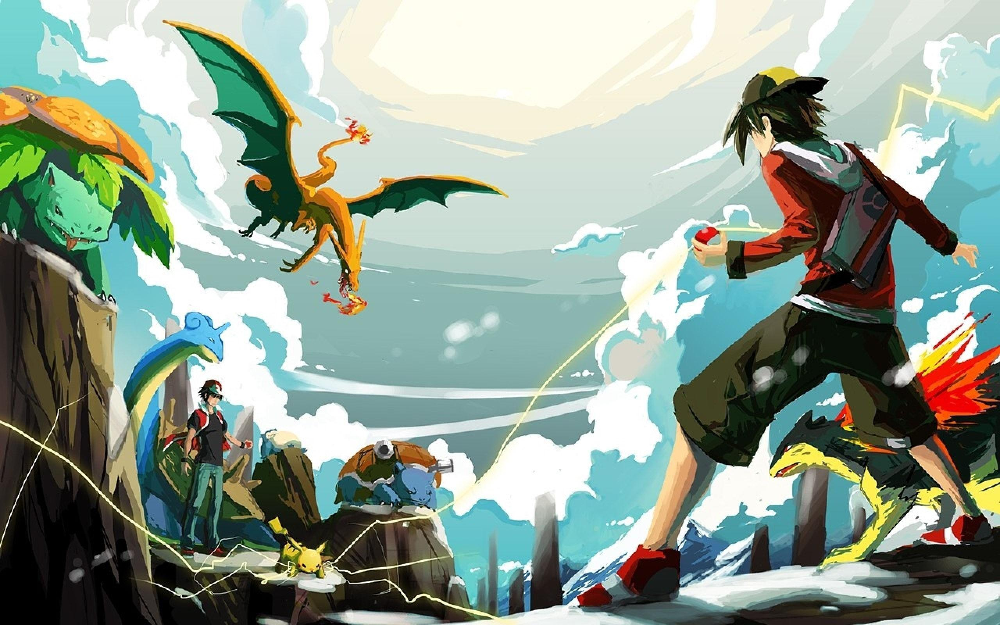

About Red
Red is known throughout the Pokémon world as the Champion from Pallet Town, as well as a living legend for his defeat of Team Rocket in Kanto during his quest.
Red's Characteristics
- Red doesn't talk
- an unwavering commitment to becoming stronger
- Disbanded the entirety of team rocket single-handedly
- is Kind and Compassionate
Red's Team
Red has one of the most memorable teams in the pokemon franchise, all of his teams will contain his best friend and starter pokemon Pikachu Click below to know more about them